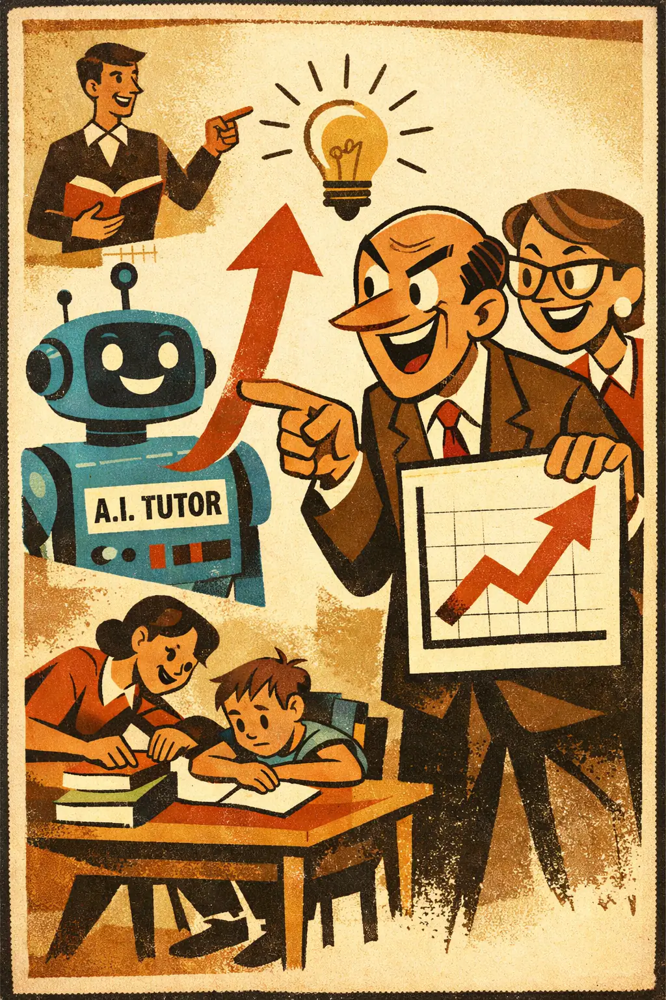
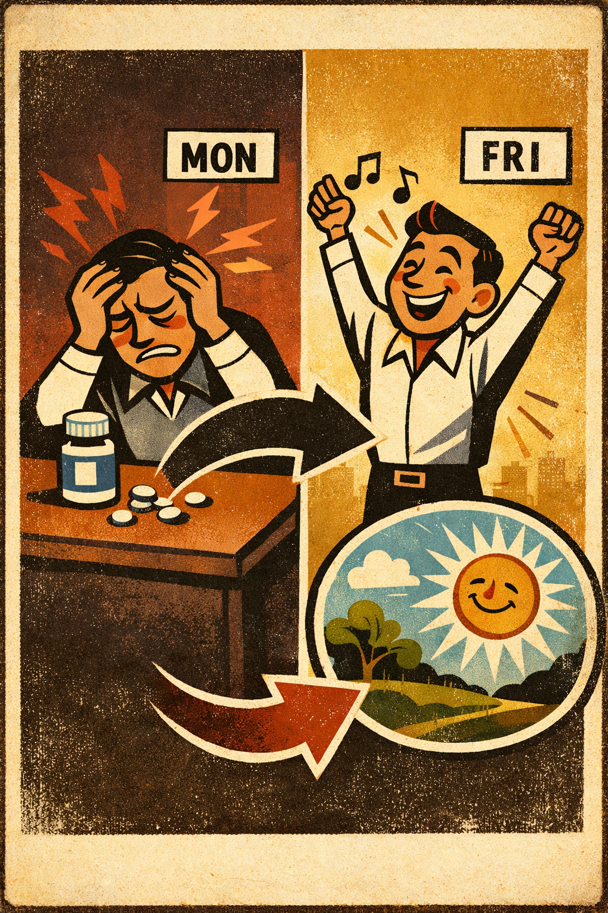

Appeal to motive
Occurs when a claim is dismissed by speculating about the speaker's motives instead of addressing the claim itself.
EmotionalCausal
Intermediate
High school

Logical Fallacies
A practical logical-fallacies reference with clear explanations, usable examples, and teaching tools.
Family
The error concerns what caused what, what explains what, or how a process is supposed to work.
Occurs when a claim is dismissed by speculating about the speaker's motives instead of addressing the claim itself.
Occurs when destruction or forced replacement is treated as an economic gain because the visible spending is counted while the unseen losses and forgone alternatives are...

Occurs when a feedback loop is treated as if it fully explains, proves, or justifies a result, even though the loop may be contingent, breakable, or not sufficient for th...

Occurs when someone treats a correlation, coincidence, or time pattern as if it already established that one factor caused the other.

Occurs when a mind-like inner observer is smuggled in to explain mind-like abilities, thereby postponing rather than solving the explanation.

Occurs when someone assumes that doubling the input will double the output even though the system has thresholds, saturation, feedback loops, or diminishing returns.

Occurs when labor-saving technology is treated as if it must reduce total employment or human usefulness simply because it automates some existing tasks.

Occurs when someone infers that because one event happened before another, the earlier event caused the later one.

Occurs when, after an outcome happens, people claim it was inevitable or obvious all along even though the uncertainty beforehand was real.

Occurs when a complex outcome is explained as if one cause alone did the work, while other relevant causes are ignored or illegitimately minimized.

Occurs when someone claims that a relatively small first step will trigger a chain of worsening outcomes without showing why that chain is likely, stable, or hard to stop...

Occurs when a purpose, goal, or final destination is attributed to something without adequate evidence that such an end point was built into it.

Occurs when a real association is noticed but the direction of causation is reversed.